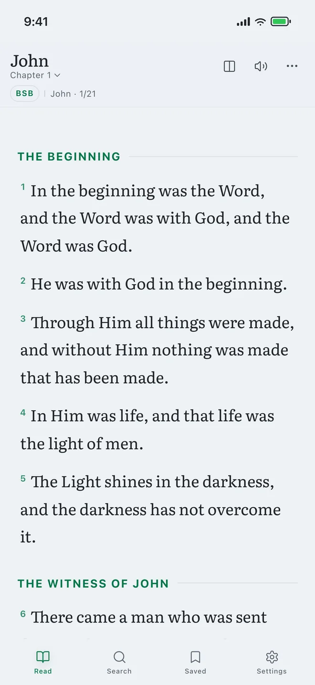
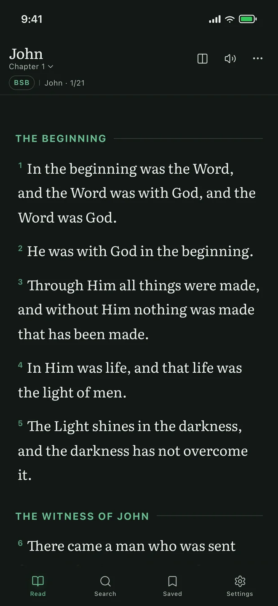
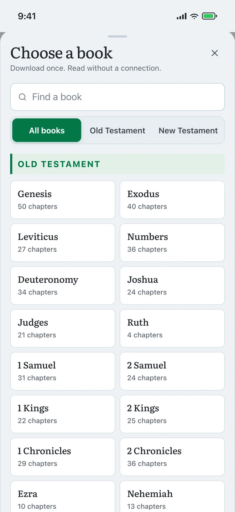
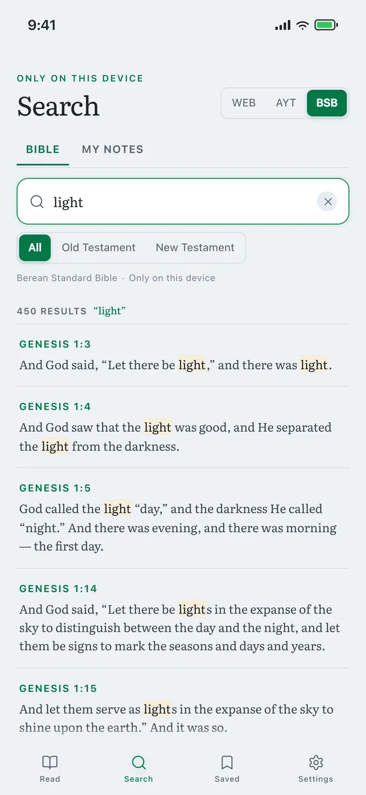
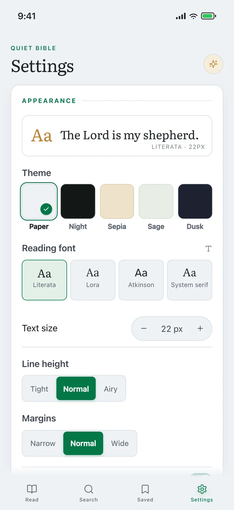
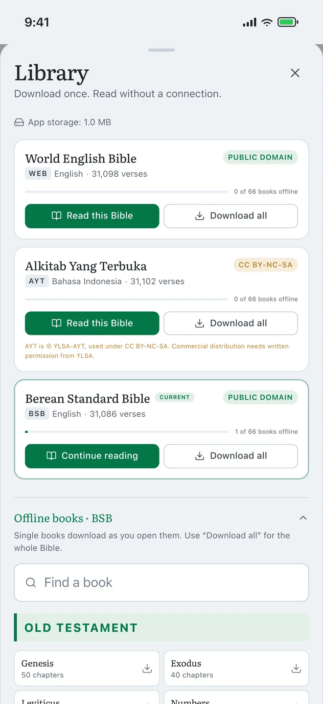
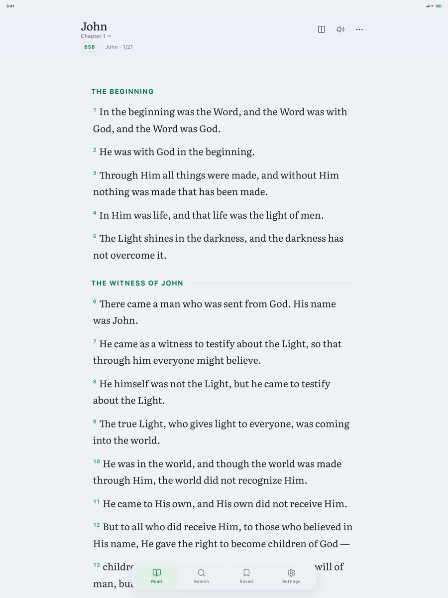

Two translations
WEB and BSB in English, with an Indonesian interface. Read one book or download the whole Bible.
QUIET BIBLE READER · SINGAPORE & INDONESIA
A local-first reader with no account, no ads and no feed. Open it and the page is where you left it.

No login. No ads. No social. No notifications.
Just the Bible, a quiet page, and your own marks.
WHAT’S INSIDE
WEB and BSB in English, with an Indonesian interface. Read one book or download the whole Bible.
The text, the search index and your marks stay on the device. No connection needed after a download.
No feed, no streaks, no daily-verse pop-up. The app opens where you stopped and then gets out of the way.
Full-text search across the Bible and your own notes. Results jump straight to the verse.
Bookmarks, highlights, one note per verse and tags. Compare two translations side by side.
Native read-aloud with lock-screen controls, a sleep timer and four curated voices.
Paper, Night and Sage free. 22px default, five themes, four fonts, swipes and arrow-key page turns.
No account, no analytics, no cloud sync. Export a local backup whenever you want one.
THE APP
Light and dark, two translations, a real book picker and settings that stay out of the way.





IPHONE · IPAD · MAC · WEB
Install the PWA, use the iPad app, or open the iPad app on an Apple-silicon Mac. One local library, no account.

QUIET PRO · ONE-TIME
The text, search, bookmarks, highlights, notes and read-aloud are free forever. Pro is a single purchase for people who want a little more.
US$4.99 once · no subscription
WEB (World English Bible) and BSB (Berean Standard Bible) are public domain.
Quiet Bible Reader is not affiliated with any church, ministry or publisher. Scripture is shown for personal reading only.
Free to read. No account. No ads. No social.